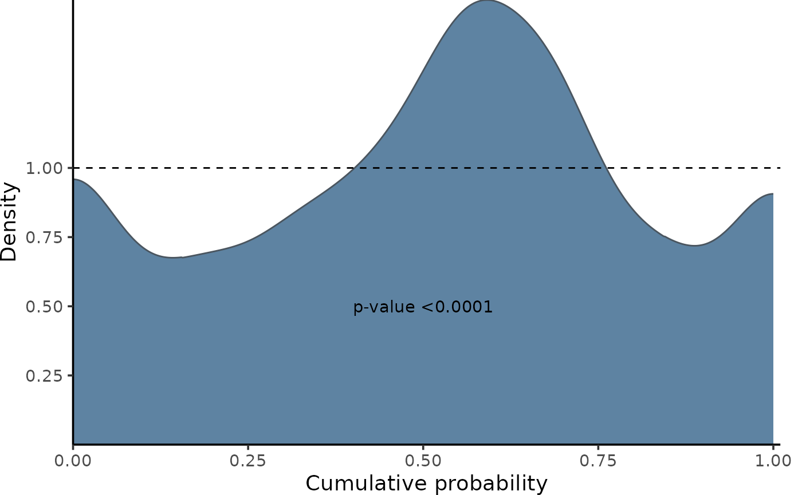
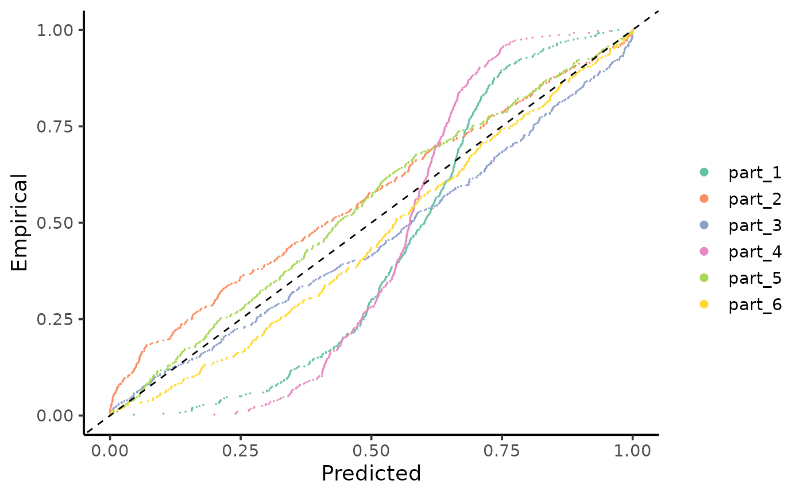
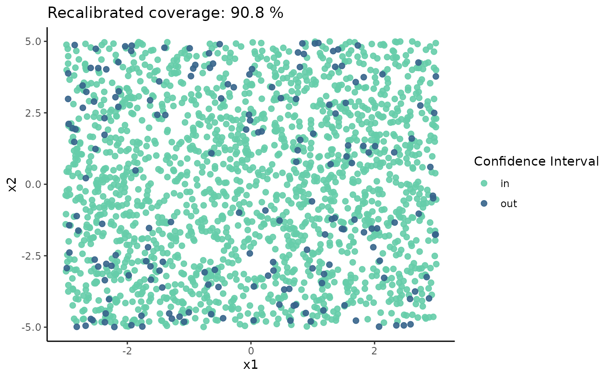

Recalibrating the predicitions of an ANN.
A visual example of recalibration using bidimensional data.
Source:vignettes/simple_mlp.Rmd
simple_mlp.RmdThe problem
The calibration of a model can be evaluated by comparing observed values with their respective estimated conditional (or predictive) distributions. This evaluation can be conducted globally, examining overall calibration, or locally, investigating calibration in specific parts of the covariate space. To better illustrate how the package can improve a models’s calibration, let’s consider some artificial examples.
In the following example, we are going to recalibrate the predictions of an artificial neural network (ANN) model to non-linear heteroscedastic data. First we will simulate some data as follows:
We define the sample size: \[\begin{equation} n = 10000 \end{equation}\]
The vectors \(x_1\) and \(x_2\) are generated from uniform distributions: \[\begin{equation} x_1 \sim \text{Uniform}(-3, 3) \end{equation}\] \[\begin{equation} x_2 \sim \text{Uniform}(-5, 5) \end{equation}\]
We define the function \(\mu\) as: \[\begin{equation} \mu(x) = \left| x_1^3 - 50 \sin(x_2) + 30 \right| \end{equation}\]
The response variable \(y\) is generated from a normal distribution with mean \(\mu\) and standard deviation \(20 \left| \frac{x_2}{x_1 + 10} \right|\): \[\begin{equation} y \sim \mathcal{N}\left(\mu, 20 \left| \frac{x_2}{x_1 + 10} \right|\right) \end{equation}\]
The code bellow generates the data described above.
set.seed(42) # The Answer to the Ultimate Question of Life, The Universe, and Everything
n <- 10000
x <- cbind(x1 = runif(n, -3, 3),
x2 = runif(n, -5, 5))
mu_fun <- function(x) {
abs(x[,1]^3 - 50*sin(x[,2]) + 30)}
mu <- mu_fun(x)
y <- rnorm(n,
mean = mu,
sd=20*(abs(x[,2]/(x[,1]+ 10))))
split1 <- 0.6
split2 <- 0.8
x_train <- x[1:(split1*n),]
y_train <- y[1:(split1*n)]
x_cal <- x[(split1*n+1):(n*split2),]
y_cal <- y[(split1*n+1):(n*split2)]
x_test <- x[(split2*n+1):n,]
y_test <- y[(split2*n+1):n]Now, this toy model was trained using the Keras framework with TensorFlow backend. The ANN architecture consist of an ANN with 3 hidden layers with ReLU activation functions and dropout for regularization as follows:
model_nn <- keras_model_sequential()
model_nn |>
layer_dense(input_shape=2,
units=800,
use_bias=T,
activation = "relu",
kernel_initializer="random_normal",
bias_initializer = "zeros") %>%
layer_dropout(rate = 0.1) %>%
layer_dense(units=800,
use_bias=T,
activation = "relu",
kernel_initializer="random_normal",
bias_initializer = "zeros") |>
layer_dropout(rate = 0.1) |>
layer_dense(units=800,
use_bias=T,
activation = "relu",
kernel_initializer="random_normal",
bias_initializer = "zeros") |>
layer_batch_normalization() |>
layer_dense(units = 1,
activation = "linear",
kernel_initializer = "zeros",
bias_initializer = "zeros")
model_nn |>
compile(optimizer=optimizer_adam( ),
loss = "mse")
model_nn |>
fit(x = x_train,
y = y_train,
validation_data = list(x_cal, y_cal),
callbacks = callback_early_stopping(
monitor = "val_loss",
patience = 20,
restore_best_weights = T),
batch_size = 128,
epochs = 1000)
y_hat_cal <- predict(model_nn, x_cal)
y_hat_test <- predict(model_nn, x_test)Observing miscalibration
Now, we can evaluate the calibration of the appropriate functions of
the recalibratiNN package. Firstly, we will calculate the Probability
Integral Transform (PIT) values using the PIT_global
function and visualize them using the gg_PIT_global
function.
We can observe in this graph that, globally, the model shows significant miscalibration (deviating from a uniform distribution)
## Global calibrations
pit <- PIT_global(ycal = y_cal,
yhat = y_hat_cal,
mse = MSE_cal)
gg_PIT_global(pit) A similar conclusion can be drawn when observing the comparison of true and predicted quantiles.
gg_CD_global(pit,
ycal = y_cal, # true response of calibration set
yhat = y_hat_cal, # predictions of calibration set
mse = MSE_cal) # mse from training on calibration setFor comparison, we will also calculate the local PIT values using the local functions. This is important because the model may be well calibrated globally but not locally. In other words, it may exhibit varying or even opposing patterns of miscalibration throughout the covariate space, which can be compensated for when analyzed globally.
Here, we can see that the model is miscalibrated differently according to the regions.
pit_local <- PIT_local(xcal = x_cal,
ycal = y_cal,
yhat = y_hat_cal,
mse = MSE_cal
)
gg_PIT_local(pit_local)Similarly, we observe the miscalibration in:
gg_CD_local(pit_local)
Since this example consists of bidimensional data, we visualize the calibration of the model on a surface representing the covariate space. In this graph, we used a 95% Confidence Interval centered on the mean predicted by the model, with a fixed variance estimated by the Mean Squared Error (MSE). When the true value falls within the interval, it is colored greenish; when it falls outside, it is colored red.
The following graph illustrates the original coverage of the model, which is around 90%. Thus, globally, we observe that the model underestimates the true uncertainty of the data (90% < 95%). However, despite the global coverage being approximately 90%, there are specific regions where the model consistently makes more incorrect predictions (falling well below the 95% mark), while accurately predicting (100%) within other regions. Although this last part may initially seem favorable (more accuracy is typically desirable), it indicates that the uncertainty of the predictions is not adequately captured by the model (overestimated) . This highlights the importance of interpreting predictions probabilistically, considering a distribution rather than just a point prediction.
coverage_model <- tibble(
x1cal = x_test[,1],
x2cal = x_test[,2],
y_real = y_test,
y_hat = y_hat_test) |>
mutate(lwr = qnorm(0.05, y_hat, sqrt(MSE_cal)),
upr = qnorm(0.95, y_hat, sqrt(MSE_cal)),
CI = ifelse(y_real <= upr & y_real >= lwr,
"in", "out" ),
coverage = round(mean(CI == "in")*100,1)
)
coverage_model |>
arrange(CI) |>
ggplot() +
geom_point(aes(x1cal,
x2cal,
color = CI),
alpha = 0.9,
size = 2)+
labs(x="x1" , y="x2",
title = glue("Original coverage: {coverage_model$coverage[1]} %"))+
scale_color_manual("Confidence Interval",
values = c("in" = "aquamarine3",
"out" = "steelblue4"))+
theme_classic() Note:
this visualization is not part of the recalibratiNN package since it can
only be applied to bidimensional data, which is not typically the case
when adjusting neural networks. This example was used specifically to
demonstrate (mis)calibration visually and to make the concept more
tangible.
Note:
this visualization is not part of the recalibratiNN package since it can
only be applied to bidimensional data, which is not typically the case
when adjusting neural networks. This example was used specifically to
demonstrate (mis)calibration visually and to make the concept more
tangible.
Recalibration
The primary function of the recalibratiNN package is recalibrate(). As of July 2024, this function includes one implemented method for recalibration. The method is thoroughly described in @torres_2024, with a simplified version discussed in @musso_2023. The method can be applied both globally and locally, with a preference for local application.The function returns a list that includes, among other things, recalibrated Monte Carlo samples weighted by the distance between true and predicted observations.
recalibrated <-
recalibrate(
yhat_new = y_hat_test, # predictions of test set
space_cal = x_cal, # covariates of calibration set
pit_values = pit, # global pit values calculated earlier.
space_new = x_test, # covariates of test set
mse = MSE_cal, # MSE from calibration set
type = "local", # type of calibration
p_neighbours = 0.08) # proportion of calibration to use as nearest neighbors
y_hat_rec <- recalibrated$y_samples_calibrated_wtThat is it! These new values in y_hat_rec are, by
definition, more calibrated than the original ones. This means that the
uncertainty estimation, although not yet perfect, is better than
before.
Shall we see?
Because we have the true observations, we can observe the PIT-values densities. This visualization is still not implemented as a function in the package, so the complete code is given below.
We see that the predictions are more calibrated throughout the covariate space.
n_clusters <- 6
n_neighbours <- length(y_hat_test)*0.08
# calculating centroids
cluster_means_cal <- kmeans(x_test, n_clusters)$centers
cluster_means_cal <- cluster_means_cal[order(cluster_means_cal[,1]),]
# finding neighbours
knn_cal <- nn2(x_test,
cluster_means_cal,
k = n_neighbours)$nn.idx
# geting corresponding ys (real and estimated)
y_real_local <- map(1:nrow(knn_cal), ~y_test[knn_cal[.,]])
y_hat_local <- map(1:nrow(knn_cal), ~y_hat_rec[knn_cal[.,],])
# calculate pit_local
pits <- matrix(NA,
nrow = 6,
ncol = n_neighbours)
for (i in 1:n_clusters) {
pits[i,] <- map_dbl(1:n_neighbours, ~{
mean(y_hat_local[[i]][.,] <= y_hat_local[[i]][.])
})
}
as.data.frame(t(pits)) |>
pivot_longer(everything()) |>
group_by(name) |>
mutate(p_value =ks.test(value,
"punif")$p.value,
name = gsub("V", "part_", name)) |>
ggplot()+
geom_density(aes(value,
color = name,
fill = name),
alpha = 0.5,
bounds = c(0, 1))+
geom_hline(yintercept = 1,
linetype="dashed")+
scale_color_brewer(palette = "Set2")+
scale_fill_brewer(palette = "Set2")+
theme_classic()+
geom_text(aes(x = 0.5,
y = 0.5,
label = glue("p-value: {round(p_value, 3)}")),
color = "black",
size = 3)+
theme(legend.position = "none")+
labs(title = "After Local Calibration",
subtitle = "It looks so much better!!",
x = "PIT-values",
y = "Density")+
facet_wrap(~name, scales = "free_y")
#> Warning: There were 6 warnings in `mutate()`.
#> The first warning was:
#> ℹ In argument: `p_value = ks.test(value, "punif")$p.value`.
#> ℹ In group 1: `name = "V1"`.
#> Caused by warning in `ks.test.default()`:
#> ! ties should not be present for the one-sample Kolmogorov-Smirnov test
#> ℹ Run `dplyr::last_dplyr_warnings()` to see the 5 remaining warnings.Once again, because we are working with bidimensional data, we can observe the coverage on a surface. We notice that the global coverage has improved slightly, and responses that fall within and outside the confidence interval (CI) are much better distributed (though still not perfect). Fine-tuning to adjust the number of neighbors may be required, as it involves a trade-off between localization and Monte Carlo error.
coverage_rec <- map_dfr( 1:nrow(x_test), ~ {
quantile(y_hat_rec[.,]
,c(0.05, 0.95))}) |>
mutate(
x1 = x_test[,1],
x2 = x_test[,2],
ytest = y_test,
CI = ifelse(ytest <= `95%`& ytest >= `5%`,
"in", "out"),
coverage = round(mean(CI == "in")*100,1)) |>
arrange(CI)
coverage_rec |>
ggplot() +
geom_point(aes(x1, x2, color = CI),
alpha = 0.9,
size = 2)+
labs(x="x1" , y="x2",
title = glue("Recalibrated coverage: {coverage_rec$coverage[1]} %"))+
scale_color_manual("Confidence Interval",
values = c("in" = "aquamarine3",
"out" = "steelblue4"))+
theme_classic()
“In the next example, we are going to recalibrate predictions of a more complex neural network/data.